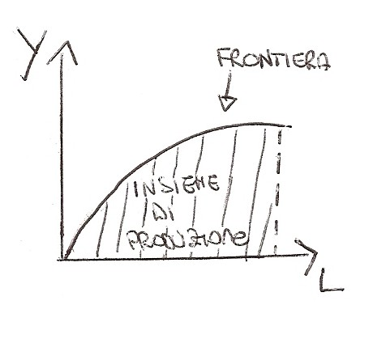
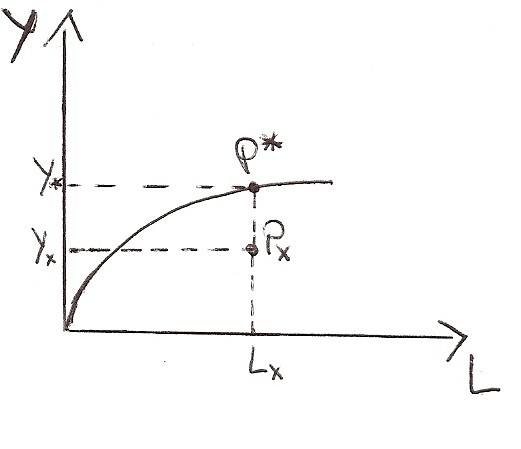

Torna alla pagina di Economia del Cambiamento Tecnologico
:: Economia del Cambiamento Tecnologico ::
Lezione 23/09/2008
Indice
L'impresa nella sua produzione è sottoposta a vincoli che possono favorire o sfavorire l'attività produttiva.
Esistono due tipi di vincoli:
1. VINCOLI ESTERNI:
2. VINCOLI INTERNI:
Per analizzare l'impresa nel tempo si possono utilizzare due approcci:
1. la tecnologia è data, non si modifica nel tempo.
QUESTA DEFINIZIONE NON E' ADATTA alla nostra realtà ma si presta bene allo studio di modelli semplificativi.
2. la tecnologia muta nel tempo dando vita al progresso tecnologico ed economico
Le teorie classiche e neoclassiche prendevano in considerazione il primo approccio.
La tecnologia si caratterizza per INPUT e OUTPUT (sia materiali che immateriali), visti in questi modelli come flussi che nel tempo non mutano.
Come input si considerano il Lavoro (L) e il Capitale (K) come output si considerano quantità fisiche (Y). Per utilizzare questo approccio bisogna partire da 4 ipotesi fondamentali:
Lo strumento usato per descrivere la tecnologia è la Funzione di produzione.
Sull'asse delle ordinate avrò l'output, mentre su quello delle ascisse il lavoro. Il capitale è dato, fisso, considerando perciò il breve periodo.

Dato il capitale posso creare:
Facciamo un esempio:

- Px = (K(costante), Lx, Yx) è un esempio di metodo produttivo tecnicamente possibile
- P* = (K(costante), L*, Y*) è un esempio di metodo produttivo tecnicamente efficiente
Notiamo quindi che Yx è MINORE di Y* perchè quest'ultimo si trova sulla frontiera di produzione perciò sfrutta al meglio le risorse.
Questo grafico è la rappresentazione economica dei processi di produzione.
Sono combinazioni di input per ottenere un certo livello di output.
Facciamo degli esempi...
Esempio 1
Siano date tre combinazioni produttive diverse per produrre una unità di output.
B C A
unità di L 2 3 1
unità di K 3 2 4
Le tre combinazioni produttive si possono rappresentare su un grafico e congiungere ottenendo così una curva che rappresenta tutte le possibili combinazioni produttive tecnicamente efficienti per ottenere un dato livello di output. Esse sono tutte equivalenti anche se presentano un'intensita di impiego di fattori produttivi diversa.
Esempio 2
Si considerino due combinazioni produttive G e H entrambe tecnicamente possibili per ottenere 1 unità di output
G H
K 3 3
L 5 7
La combinazione H è meno efficiente perchè utlizzza due unità di lavoro in più per ottenere lo stesso output.
Terra (ettari) Lavoro (anni-uomo) Y (output - produzione di grano) 1 0 0 1 1 6 1 2 13.5 1 3 21 1 4 28 1 5 34 1 6 38 1 7 38 1 8 37
Dati questi dati rappresentare graficamente la funzione di produzione. Mi trovo un K costante, perciò avrò una f.ne di produzione di tipo esponenziale.